Sønder Vilstrup
Ziemlich grobkörniger grauer Granit
Länge: 188 cm
Größte Breite: ca. 40 cm
Dicke: zw. 22-33 cm
Runenhöhe: ca. 12 cm
Runeninschrift :
NN ließ diese Kumbl machen, Harald ...rm...
82 - Sønder Vilstrup - Letztes Update 23.09.2025
Listennummer : DR 36 / DK SJy 3
Navi-Daten: 55.56952 9.55868 - oder: Landerupvej 8, 6000 Kolding
Transliteration: ... lit : ku]bl : þisi : | [kaurua : haralt ...rm... | ... faþ(u)(r) ... | ...]
Von Ole Worm (*13.05.1588 - 31.08.1654, Arzt, Universalgelehrter und der Begründer der Runologie)
 Bildquelle:
Digitale Sammlung der Königlichen Bibliothek Kopenhagen -
Lizenz:
Public Domain
Bildquelle:
Digitale Sammlung der Königlichen Bibliothek Kopenhagen -
Lizenz:
Public Domain
war 1622 der dänische König Christian IV. (*12.04.1577 - 28.02.1648)
 Bildquelle:
Wikipedia - Lizenz:
Public Domain
Bildquelle:
Wikipedia - Lizenz:
Public Domain
dazu bewogen worden am 11. August 1622 einen Brief an die Bischöfe von Dänemark und Norwegen zu senden, um darüber die Pfarrer im Land aufzufordern alle Informationen zu Denkmälern, Runensteinen, Grabhügel usw. an ihn zu melden, um die älteste Geschichte Dänemarks zu beleuchten. Unterstützer oder gar treibende Kraft war wohl Christian Friis (*4. November 1581 auf Gut Krastrup in Farstrup - 01. Oktober 1639, dänischer Adliger und königlicher Kanzler).
 Bildquelle:
Wikipedia - Lizenz:
Public Domain
Bildquelle:
Wikipedia - Lizenz:
Public Domain
Der Originaltext dieses Briefes lautet auszugsweise: "Wor gunst tillforn. Wy bede Eder och wille, at I Eders mueligste flid ahnwender allewegne wdj Eders stigt att opsøge och antegne alle slags antiquiteter och documenter effter medfølgende fortegnelsis indhold, och att I saadanne med flid lader optegne och engang inden Paaske førstkommendis wdj wortt cantzelie lader indleffuere. Dermed skie wor willghe. Befalendis Eder Gud. Skreffuitt paa wortt [slott] Kiøbenhaffn, den 10. augusti anno 1622. Vnder vort signett.Christian."
In den sogenannten "Præsteindberetninger til Ole Worm" - Band I, Indberetninger fra Ålborg og Ribe Stifter, 1625-42, S. 210-211 (S. 250/251 in der pdf-Datei) findet sich dann zu "Eltang/Vilstrup" die Rückmeldung des Probst Anker Sørensen (*21.06.1608 - 16.11.1682, Provst von Brusk herred, Pfarrer in Kolding), der auf Grundlage der einzelnen Rückmeldungen der Pfarrer in seinem Bezirk, in der Harde "Brusk herred", eine Übersicht erstellt hat. Dort heißt es dann (übersetzt): ..."findet sich ein großer Stein mit Runenbuchstaben bei einer Quelle, die Quelle der Könige, und vermutlich von Harald Blauzahn zur Erinnerung errichtet worden... / In der Nähe von Landerupgaard gibt es noch einen weiteren kleinen Stein mit Runenbuchstaben darauf..."
Weitere Quelle hierzu: "Danske Samlinger for Historie, Topografi, Personal- og Literaturhistorie. Anden række, Fjerde Bind, Kopenhagen 1874-76, mit dem Beitrag "Ribe Stifts Beskrivelse 1638" von Oluf August Nielsen (*24.04.1838 - 05.01.1896, Archivar/Historiker - link-LIVES).
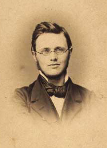
Bildquelle: Wikipedia - Lizenz: Public DomainAuf S. 82ff. findet sich der Eintrag zu Landerup (Seite 84ff. in der pdf-Datei).
Bei Ole Worm finden sich dann in seinem großen Werk "Danicorum Monumentorum libre sex - 1643" zwei Steine zu Landerup. Zum einen dieser Metallschnitt mit der Bezeichnung "Landerupense Primum" (S. 446). Darin schreibt er (übersetzt): "...ungleich geformt, etwas spitz, drei Ellen lang, zwei Ellen breit und etwa eine Elle lang, bereits zur Seite geneigt... so dass aus der Inschrift nichts Nennenswertes entziffert werden konnte." Seinen Angaben zufolge hatte der Stein eine Höhe von 3 alen / Breite 2 alen / Dicke ca. 1 alen (alen = Elle = 0,628 m). Demnach hatte der Runenstein also in heutigen Maßen eine ursprüngliche Höhe von 2,20 m, eine Breite von 1,26 m und eine Dicke von 0,63 m. Nach der Wiedergabe des u.a. Metallschnittes führt er aber noch aus, dass die Inschrift etwas mit "Thyra, Jelling und Harald Gormsson" zu tun haben könnte, weil doch die ein oder andere Rune für ihn lesbar wäre.
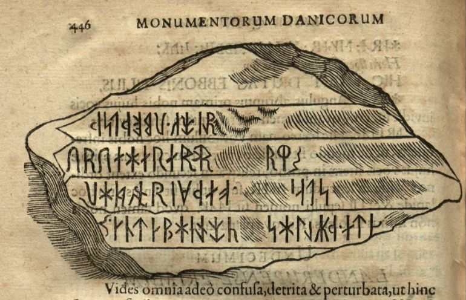
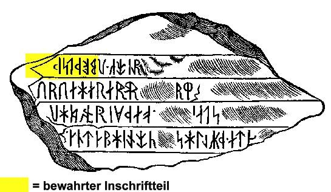
Diesem Metallschnitt liegt eine Zeichnung von Laurids Christensen Bording (*1617 - 20.03.1675, Historiker) zu Grunde, die er wohl im Jahr 1642 gefertigt hat. Aus ihrem Briefwechsel kann nämlich entnommen werden, dass Ole Worm sich in einem Brief vom 5. Juli 1642 ausdrücklich bei Bording für das eingesandte Material zu diesem Runenstein bedankt. Mit Laurids Christensen Bording fand Ole Worm einen Nachfolger für Jon Skonvig und im Gegensatz zu diesem konnte Bording wirklich zeichnen und Runen entziffern konnte er auch noch!
Breve fra og til Ole Worm II - 1637-1643 (Nr. 622-1178) - übersetzt von Henrik Ditlev Schepelern (*19.04.1912 - 28.08.2001, Philologe, Museumsinspektor) - unter Mitwirkung von Holger Friis Johansen - Munksgaard - 1967 - 1056. (Ep. 740). Til Laurits Christensen Bording i Ribe. 5.7.1642 (S. 373 = 380 in der pdf-Datei).
In den "Præsteindberetninger til Ole Worm" wird zu dem Runenstein ausgeführt: "...Den Berichten der Geistlichen zufolge befindet sich auf dem Landerupgård bei einer Quelle, die in der Umgebung noch immer die Quelle der Könige genannt wird, ein großer Stein mit Runen, vermutlich von König Harald errichtet..."
Auf der S. 447 findet sich dann aber auch noch dieser Metallschnitt von Ole Worm mit kryptischen Zeichen und der Bezeichnung "Landerupense II". Dessen Maße gibt er mit "Godt et sjællandsk alen i længden, tre kvarter bred og 1 ½ alen tyk" an (übersetzt: "Gut ein seeländische Elle in der Länge, drei Kvarter breit und 1 ½ Ellen dick - also umgerechnet ca. 63 cm x 47 cm x 94 cm / Anm.: 1 Elle = 62,77 cm / 1 Kvarter = ¼ Elle).
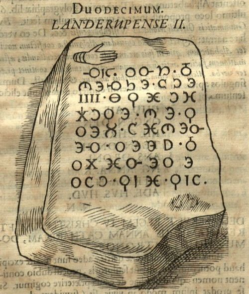
Dazu heißt es auch in den Præsteindberetninger til Ole Worm: "...Ved forskrefne Landerup gaard findis och en anden liden sten met runebogstaffue paa." Übersetzung: "Bei dem beschriebenen Landerup Hof findet sich auch ein anderer kleiner Stein mit Runen drauf." Quelle: Præsteindberetninger til Ole Worm, Bind I, Ålborg og Ribe Stifter, 1625-42, Letzer Satz, 1. Absatz, S. 211
Erik Moltke - Jon Skonvig og de andre runetegnere. Et bidrag til runologiens historie i Danmark og Norge I-II, 1956-58 Band 2 führt auf der S. 184 aus, dass es Ole Worm zur Ehre gereicht, dass er erkannte, dass die Zeichen auf dem Stein gemäß dem Chiffrierbuch "Polygraphiæ libri sex, Ioannis Trithemii, abbatis Peapolitani, qvondam Spanheimensis, ad Maximilianum Cæsarem" von Johannes Trithemius, Frankfurt 1550 ausgeführt worden seien - siehe Danicorum Monumentorum libre sex - 1643 (S. 448).
Johannes Trithemius (latinisiert aus Johann(es) Tritheim, auch Johannes von Trittenheim, Johann Heidenberg sowie Johannes Zeller genannt - *01. Februar 1462 in Trittenheim - 13. Dezember 1516 in Würzburg, deutscher Mönch, Humanist)
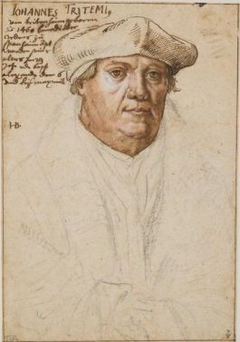
Bildquelle: Wikipedia - Lizenz: Public DomainEntschlüsselt handelte die Inschrift also von König Christian IV. (*12.04.1577 - 28.02.1648)
Bildquelle:
Wikipedia - Lizenz:
Public Domain
und seiner Gattin Anna Katharina (Anna Katharina von Brandenburg, *26.07.1575 - 29.03.1612).
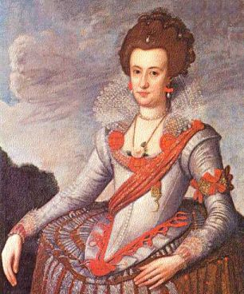
Bildquelle: Wikipedia - Lizenz: Public DomainDieser 2. Stein hatte keinerlei Bezug zur Wikingerzeit.
Im Jahre 1654 wurde durch Johannes Meier (*um 1606 - ca. 1660 - Lehrer und Verfasser) in seiner handgeschriebenen "Liber monumentorum Danicorum, qvi monumenta Danica Olai Wormii partim emendat partim locupletat" (pdf-Datei anhand eigener Fotos von mir erstellt) über die beiden Runensteine berichtet (Blatt 34/35) - Erhalten in der Königlichen Bibliothek - GKS 2371 kvart - in Kopenhagen. Bei meinem Besuch am 26.09.2022 durfte ich diese Handschrift (nach Online Vorbestellung) in Händen halten und eingehend fotografieren.


 Bildquelle:
Wikipedia - Lizenz:
Public Domain
Bildquelle:
Wikipedia - Lizenz:
Public Domain
hinzugefügt worden sein. Text und Zeichnungen der Handschrift - auch im Zusammenspiel - sind ansehnlicher ausgeführt als in NKS 799.
In der Königlichen Bibliothek in Kopenhagen hat sich von Johannes Meier aber auch noch eine zweite Handschrift erhalten - NKS 799 kvart - Joh. Mejeri Monumenta Runica in Dania (pdf-Datei anhand eigener Fotos von mir erstellt). Deren Entstehungsdatum ist nicht bekannt. Die Zeichnungen finden sich auf den S. 33/34.


NKS 799 kvart - Joh. Mejeri Monumenta Runica in Dania - Papier - 44 Blatt, Blatt 41-44 unbeschrieben, aus dem 18. Jahrhundert, vormals Nr. 70 in der Manuskript Sammlung von Peder Frederik Suhm (*18.10.1728 - 07.09.1798).
 Bildquelle:
Wikipedia - Lizenz:
Public Domain
Bildquelle:
Wikipedia - Lizenz:
Public Domain
Es handelt sich um
ein Büchlein mit einfachem Pappeinband, der Buchrücken ist aus
Leder und
verstärkte Ecken aus Leder weist der Buchdeckel auf. Es hat die
Maße: H: ca. 20
cm / B: ca. 17 cm / D: ca. 1,5 cm. Zu den einzelnen Zeichnungen im Büchlein
wurde ein einfacher Maßstab abgebildet.
Bei beiden Exemplaren weist immer das rechte Blatt der Doppelseite in der oberen Ecke eine mit Bleistift geschriebene Seitenzahl auf. Diese beiden Werke sind Abschriften von früheren Werken, die die Zeit nicht überdauert haben. Vielleicht sind sie in Kopenhagen beim Großbrand von 1728 vernichtet worden, als neben zahlreichen privaten Beständen auch ca. 35.000 Bücher der Königlichen Bibliothek in Kopenhagen ein Raub der Flammen wurden! Die GKS 2371 kvart soll laut Prof. Ludv. F. A. Wimmer (*07.02.1839 - 29.04.1920, Philologe und Runenforscher - link-LIVES - Politiets registerblade - Bestattungsprotokoll)
 Bildquelle:
Fotografie zw. 1877-1900 von Fotograf Hansen & Weller
-
Det Kgl. Biblioteks billedsamling - Lizenz:
Public Domain
Bildquelle:
Fotografie zw. 1877-1900 von Fotograf Hansen & Weller
-
Det Kgl. Biblioteks billedsamling - Lizenz:
Public Domain
und seinen Infos von Christian Bruun (*10.12.1831 - 28.02.1906, Königlicher Oberbibliothekar - link-LIVES)
 Bildquelle: Fotografie
um 1880 von Fotograf J. Petersen
(*19.03.1829 -
01.02.1905) -
Det Kgl. Biblioteks billedsamling - Lizenz:
Public Domain
Bildquelle: Fotografie
um 1880 von Fotograf J. Petersen
(*19.03.1829 -
01.02.1905) -
Det Kgl. Biblioteks billedsamling - Lizenz:
Public Domain
von
Niels Foss selbst abgeschrieben worden sein. Er hat die Texte laut
den Studien von
Erik Moltke
(*04.04.1901 - 19.10.1984, Runologe, Historiker)
offenbar überarbeitet, verkürzt oder geändert und seine eigene
Orthografie eingebracht (z.B. alt: haffuer - bei Foss: haver / tyck/tyk /
kircke/kirke / oc/og u.a.).
In der
NKS 799 kvart hingegen steht auf der Seite 37 links unten "Niels
Knudsen Jerne" und seine Handschrift lässt vermuten, dass er die
gesamte Abschrift angefertigt hat. Er war offenbar ein professioneller Schreiber
und könnte mit dem Niels Knudsen identisch sein, der
1728 "Skriverkarl" auf dem Holmen (Stadtviertel von
Kopenhagen) war, also ein Mann der schnell viele Texte schreiben und liefern
konnte. Er wurde am 08.11.1737 zum "ekvipageskriver"
ernannt. Es scheint dass er sich entgegen
Niels Foss sehr eng an das Original gehalten hat.
Offenbar gab es laut dem Katalog über die Büchersammlung
von
Peter
Hansen Resens (*17.06.1625 -
01.06.1688)
 Bildquelle:
Wikipedia - Lizenz:
Public Domain
Bildquelle:
Wikipedia - Lizenz:
Public Domain
"Bibliotheca
Regiæ Academiæ Hafniensi donata" Hafniæ (Kopenhagen) von
1685 - siehe
S. 273 - früher noch ein drittes Werk von
Johannes Meier mit dem Titel "Johan. Meieri
liber MS. de Monumentis Runicis sive antiqvis Danicics".
Quelle:
Erik
Moltke -
Jon Skonvig og de andre runetegnere. Et bidrag til runologiens historie i
Danmark og Norge I-II,
1956-58
Band 2
-
Kapitel 13
Zwischen Montag, 26.09.2022, und Mittwoch, 28.09.2022, habe ich in der Königliche Bibliothek - Den sorte Diamant - in Kopenhagen - u.a. diese beiden alten Handschriften nach Online-Vorbestellung zur Ansicht erhalten. Ich durfte mir Aufzeichnungen machen, sie aber auch uneingeschränkt fotografieren. Ich habe sie mit dem Smartphone komplett als Doppelseiten fotografiert und daraus jeweils eine pdf-Datei erstellt. Vielleicht hat ja jemand Bedarf an diesen seltenen Ausgaben, die aufgrund ihres Alters keinem Urheberrrecht mehr unterliegen.
Peder Hansen Resen (*17.06.1625 - 01.06.1688, Historiker) hat mit dem von ihm über 20 Jahre gesammelten Material das großartige Werk "Atlas Danicus", bestehend aus letztlich 39 Folianten, geschaffen. Nur geringe Teile wurden aber zu seiner Lebzeit gedruckt. Die Bände wurden wenige Jahre nach seinem Tod 1692 an die Königliche Bibliothek Kopenhagen übergeben. Aufbewahrt wurden sie auf dem Dachboden der Trinitatis Kirche. Dort wurden sie fleißig studiert, abgeschrieben und zeitweise ausgeliehen. Leider wurde dann ein Großteil davon beim Kopenhagener Großbrand 1728 zerstört. Es hat sich neben einigen Originalseiten - siehe Arnamagnäanische Sammlung - AM 359 fol. / AM 360 fol. / AM 361 fol. und AM 362 fol. (digitalisiert) - nur eine (verkürzte) Abschrift und außerdem Kupferstiche von etwa 200 Städteansichten aus der Vogelperspektive erhalten. Originale dieser AM 359/360/361 fol sind über die Universität Kopenhagen - Institut for Nordiske Studier og Sprogvidenskab (NorS) - AM 359 fol / AM 360 fol / AM 360 fol (Karten) / AM 361 fol - in sw abrufbar. Eine zweite (verkürzte) Ausgabe war von Vincent Lerche (*04.04.1666 - 28.07.1742, Jurist, Architekt) beauftragt worden, diese wurde aber beim Brand von Schloss Christiansborg im Jahr 1794 vernichtet.
In der Königlichen Bibliothek in Kopenhagen wird seit 1803 in der Sammlung Uldall (186 folio) diese einzige verbliebene Ausgabe, die in den 1750er Jahren durch den Hofbaumeister Laurids de Thurah (*04.03.1706 - 06.09.1759)
 Bildquelle:
Wikimedia - Lizenz:
Public Domain
Bildquelle:
Wikimedia - Lizenz:
Public Domain
aus verstreuten Resten des Atlas Danicus in 7 Bänden rekonstruiert worden war, aufbewahrt:
Wie diesem Titel zu entnehmen ist, gehörte dieses Exemplar vormals Adam Gottlob Graf von Moltke (*10.11.1710 - 25.09.1792, Staatsmann, Diplomat)
 Bildquelle:
Wikimedia - Lizenz:
Public Domain
Bildquelle:
Wikimedia - Lizenz:
Public Domain
Nach dessen Tod erwarb Herman Treschow (*11.12.1739 - 02.05.1797, Professor für Theologie, Pfarrer) diese Ausgabe. Peter Uldall (*29.06.1743 - 11.11.1798, Jurist, Theologe)
 Bildquelle:
Wikimedia - Lizenz:
Public Domain
Bildquelle:
Wikimedia - Lizenz:
Public Domain
wiederum kaufte sie für 170 Rigsdaler (Rigsdaler zu 24 Skilling - damals 1 ½ Mark) nach dessen Ableben. Er hatte aber nicht lange Freude daran, denn er starb ein Jahr später an einem Schlaganfall. Sein Sohn, Justizrat W. A. Uldall, schenkte diese Ausgabe der Kgl. Bibliothek im Jahr 1803, wo dieses großartige Werk noch heute verwahrt wird - Ein Band hat übrigens die stolze Größe H/B/D von 40 cm x 29,5 cm x 9,5 cm.
Im Atlas VI. ist auf der Seite 738ff. ein Eintrag / Zeichnung zu den beiden Runensteinen enthalten, die ich am 28.09.2022 vor Ort fotografieren durfte.


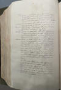 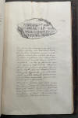 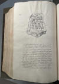 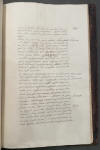
Der dortige Eintrag ab der S. 738 - letzter Absatz, Eintrag "Vilstrup" fehlt - von mir aus der lateinisch-dänischen Übersetzung in "Peder Hansen Resen - Atlas Danicus VI D Ribe Stift - udgivet af Susanne Lykke Nielsen - 1987" - hier ins Deutsche übersetzt (so gut es ging):
"In der Gemeinde Vilstrup oder Landerup, im nördlichen Teil des Dorfes Landerup, können Sie einen Stein sehen, der dreieinhalb Ellen lang und zwei Ellen breit ist und der in der Art, wie Sie ihn sehen, mit Runen beschrieben ist. Im folgenden Bild wie von Worm wiedergegeben:
Zeichnung auf der S. 739 oben
...dass er jedoch entweder sehr beschädigt oder eine Fälschung ist, kann jeder, der über Grundkenntnisse der Runenschrift verfügt, nicht bezweifeln, da er erkennen kann, dass es sehr inkonsequent ist, da es sowohl Vokale mit Konsonanten verwechselt als auch ausländische Buchstaben vermischt, was ja bei Runen nicht der Fall ist, sondern mit den anderen, so dass sogar Worm es aufgegeben hat, herauszufinden, was es bedeutet. An derselben Stelle, nicht weit westlich desselben Steins, gibt es eine sehr klare Quelle, die Königsquelle genannt wird, und viele, die versucht haben, darin zu baden, bestätigen, dass sie heilende Kraft hat, insbesondere gegen Augenkrankheiten und Hautausschläge. Im südlichen Teil desselben Dorfes lag einst ein Stein, der in seltsamen Buchstaben beschrieben wurde, aber da offenbar Christian IV. erwähnt wurde, war klar, dass er neueren Datums war. Das folgende Bild zeigt den Stein mit seinen Buchstaben:
Zeichnung auf der S. 740 oben
Mit gebräuchlicheren Buchstaben können Sie dasselbe wie folgt schreiben: "Gud aje Kongen den IIII Chrestean on hans Droning Anna Katrina, nade hur hud". Hier wird deutlich, dass der Steinmetz mehrere Fehler gemacht hat und im zweiten Wort aje statt eje, im siebten on statt oc oder og, im dreizehnten hur statt hier und im letzten hud statt gud geschrieben hat und wenn diese Fehler korrigiert werden, ergibt sich folgende Bedeutung: Gott segne den christlichen König Christian IV. und seine Königin Anna Katrina, erbarme dich Gottes, d. h. Möge Gott König Christian IV. und seine Königin Anna Katharina besitzen oder sie bei sich wohnen lassen. Gott sei ihnen gnädig. S. 741 Es scheint, dass jemand dies als Nachahmung von Runeninschriften angefertigt hat. Da es recht neu ist, ist es ohnehin nicht von großem Interesse."
Es gibt auch aus dem Jahr 1687 zu dem Runenstein Informationen aus einer "Præsteindberetninger". Ende des 17. Jahrhunderts hatte nämlich o.g. Professor Peder Hansen Resen (*17.06.1625-01.06.1688, Historiker) über die Bischöfe um Rückmeldungen der örtlichen Pfarrer zu den Altertümern in deren Region gebeten. Deren Antworten nutzte er für seine Arbeit den dem großartigen Werk "Atlas Danicus".
Dazu macht Peder Marius Elias Eliassen (*24.07.1874 - 08.05.1928, Journalist und Historiker - link-LIVES - Melderegister Kopenhagen)
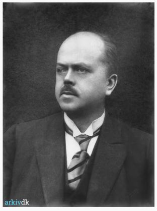
Bildquelle: arkiv.dk - Lizenz: Public Domainim Vejle Amts Årbog - 1908, in seiner Abhandlung "Smaastykker - To Præsteberetninger fra 1687", Ausführungen ab der S. 171 ff. Dort gibt er die Rückmeldung des örtlichen Pfarrers wieder: "In der Gemeinde Vilstrup gibt es einen Bauernhof, namens Landerupgaard, dessen angrenzendes Feld fast in der Mitte der Vilstrup Mark urbar gemacht wird, auf dem ein erdverbundener Stein mit einer geheimen Schrift und Buchstaben darauf, die jetzt aber so abgenutzt sind, dass die ganzen Linien nicht mehr zu erkennen sind. Als ich zum ersten Mal an diesen Ort kam, versuchte ich, einen Sinn darin zu finden, aber vergebens. An gleicher Stelle befindet sich eine Kraftquelle, die heute noch Königsquelle heißt und vor einiger Zeit für einen Fischteich genutzt wurde, aber nur noch in einem schlechten Zustand vorgefunden wird. Was das gemeine Volk darüber fabelt, ist nicht mehr erwähnenswert als etwas, das keinen bestimmten Grund hat - (S. 173 / 174 in der pdf-Datei) "... als Zeuge: Peder Clausen Emmerleff (Petrus Claudij Emmerlevius, *10.08.1654 - 06.07.1719 (Beerdigungsdatum), Pfarrer in Eltang-S.Vilstrup von 1681-1719). Danach führt er noch aus, dass dies der Stein sei, der bei Ole Worm wiedergegeben wurde und bringt die dort verwendete Zeichnung. Daneben macht er noch Ausführungen zum Schicksal / Verbleib der Steines, führt Grundtvig an (zum Treppenstein zerschlagen - siehe unten) und dass weiter nachdem Stein gesucht würde. In Bezug auf die Königsquelle schreibt er, dass man dieser eine große Heilkraft zuschreibe und in ihr, da sie nicht zufriere, etwas Übernatürliches sehe.
Durch Erik Pontoppidan (der Jüngere, *03.09.1698 - 20.12.1764)
 Bildquelle:
Wikipedia - Lizenz:
Public Domain
Bildquelle:
Wikipedia - Lizenz:
Public Domain
wird in seinem Werk "Den danske Atlas" - Tomus V, 2. Bind, Cap. X, Del. 2, Riber Stift, S. 957, (k), über die Örtlichkeit und die beiden Runensteine berichtet (S. 13, Nr. 11 der pdf-Datei).
"Kirken har et maadeligt Taarn. Altertavlen og Prædikestolen bekostet 1667 af Sigvard Lützau Capitain over Koldinghuus Læn. Kalk og Disk af Sølv given 1717 af Sognepresten Peder Clausen Emmerlev. Klokken har Borgemester og Raad i Kolding ladet omstøbe 1570 i Kong FRIDERIK II Tid, hvis Vaaben staaer derpaa. Pa Synder Vilstrup Mark ved Skovsgaard er en Høi, naar deraf er taget Sand, er deriblant fundet Kul, Sinder, Brændsteen og Jern-Søm. Ved Laderup Gaard er en Veldekilde, kaldet Kongens Kilde, hvorhos ligger en stor Rune-Steen, hvis Inscription i WORMII Tid allerede var næsten udsledt, Monum. Dan. Pag. 446. dog kunde derpaa tydelig læses det Navn Harald og Spor af Germs og Thyres Navn, hvoraf sluttes til Steenens Ælde og at den er af samme Tider og Beskaffenhed med Jellinge Runesteene. Om Landerup er den Tradition, at den i meget gamle Tider har været en Kongelig Lystgaard i denne Egn, og at de gamle Konger har betient sig af Kilden til at toe sig i for Sundheds Skyld. WORMIUS anfører sammesteds en anden Steen som da og fandtes ved Landerup, men med en ny Inscription af ganske besønderlige Figurer, som formodentlig er udhuggen kort efter Kong CHRISTIAN IV og Droning ANNÆ CATHARINÆ Formæling, hvis begge Navne læses derpaa..."
Übersetzung: "Die Kirche hat einen normalen Turm. Das Altarbild und die Kanzel wurden 1667 von Sigvard Lützau, dem Hauptmann des Kreises Koldinghus, bezahlt. Der Kelch und ein Teller aus Silber, 1717 Geschenk von Peder Clausen Emmerleff (Petrus Claudij Emmerlevius, *10.08.1654 - 06.07.1719 (Beerdigungsdatum), Pfarrer in Eltang-S.Vilstrup von 1681-1719). Der Bürgermeister und der Rat von Kolding haben die Glocke im Jahr 1570 zur Zeit von König Friedrich II. (*1. Juli 1534 - 4. April 1588, König von 1559-1588)
 Bildquelle:
Wikipedia - Lizenz:
Public Domain
Bildquelle:
Wikipedia - Lizenz:
Public Domain
umgestalten lassen, wo nun das Wappen
darauf angebracht ist. Auf der Sønder Vilstrup Mark in der Nähe von
Skovsgaard
gibt es einen Hügel, in dem man beim Sandabbau Spuren von Kohle, Schlacke,
Feuerstein und Eisennägel findet. Beim Landerupgaard gibt es eine
heiße Quelle,
die Königsquelle genannt wird, in deren Nähe ein großer Runenstein liegt, dessen
Inschrift zu
Ole Worms Zeiten bereits fast gelöscht war:
Danicorum Monumentorum
S. 446. Allerdings konnten der Name
Harald und Spuren von
Siehe auch: Præsteindberetninger til biskop J. Bloch 1766 - 1769 - Brusk herred - Eltang og Sønder Vilstrup Sogn - Unterschrieben Stenderup Pfarrhof den 10. Februar 1768 von J. H. Seidelin.
Søren Abildgaard (*18.02.1718 - 02.07.1791, Zeichner, Kupferstecher und Geologe)
 Bildquelle:
Jellingprojektet - Lizenz:
Public Domain -
http://www5.kb.dk/images/billed/2010/okt/billeder/object444188/da/
Bildquelle:
Jellingprojektet - Lizenz:
Public Domain -
http://www5.kb.dk/images/billed/2010/okt/billeder/object444188/da/
fertigte im Jahr 1772 diese Zeichnung des Steines an, als er bereits schwer beschädigt war. Mit mehreren Sprenglöchern hatte man offenbar versucht den Stein zu teilen.
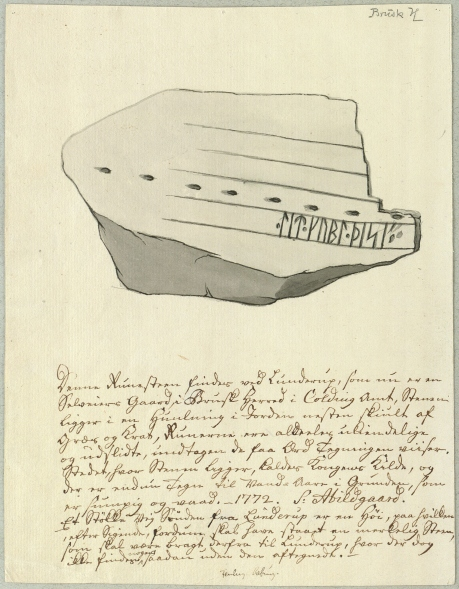
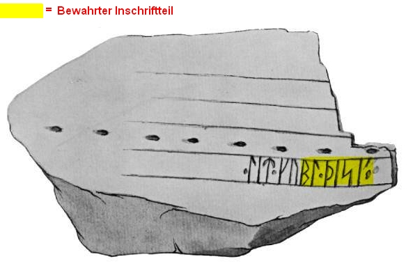
Originalgröße des Blattes: 24 x 19 cm.
Der digitalen Sammlung des Nationalmuseums Kopenhagen entnommen - Lizenz: Public Domain
Handschriftlicher Text: "Denne Runesteen findes ved Lunderup, som nu er en Selveiers Gaard i Brusk Herred i Colding Amt. Stenen ligger i en Huulning i Jorden nesten skiult af Græs og Krat, Runerne ere aldeles ukiendelige og udslidte, undtagen de faa Ord Tegningen viiser. Stedet, hvor Stenen ligger, kaldes Kongens Kilde, og der er endnu Tegn til Vand-Aare i Grunden, som er sumpig og vaad. 1772. S: Abildgaard."
Übersetzung: "Dieser Runenstein befindet sich in Landerup, das heute ein selbständiger Hof in der Brusk Harde im Kolding Amt ist. Der Stein liegt in einer Mulde im Boden, fast verdeckt von Gras und Büschen, die Runen sind bis auf die wenigen Worte, die die Zeichnung zeigt, völlig unkenntlich und abgenutzt. Der Ort, an dem sich der Stein befindet, wird die Quelle des Königs genannt, und es gibt immer noch Anzeichen von Wasseradern im Boden, der sumpfig und nass ist."
Dann fügt Søren Abildgaard noch ergänzend an:
Et Støkke Vej sønden fra Lunderup er en Høi, paa hvilken, efter sigende, fordum skal have staaet en merkelig steen, som skal være bragt derfra til Lunderup, hvor der dog ikke findes nogen saadan uden den aftegnede.
Übersetzung: "Etwas südlich von Landerup befindet sich ein Hügel, auf dem angeblich früher ein seltsamer Stein gestanden haben soll, der von dort nach Landerup gebracht worden sei, von dem aber nichts aufzufinden ist, außer dem abgezeichneten."
Søren Abildgaard hat außerdem zu Landerupgaard, zu der Königsquelle und zu dem Runenstein noch diesen Eintrag in seinem "Dagbog VIII" aus den Jahren 1772 auf der S. 2-3 vorgenommen. Er macht Ausführungen zur Lage und Größe des Runensteins und gibt den für ihn lesbaren Teil der Inschrift wieder.
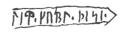

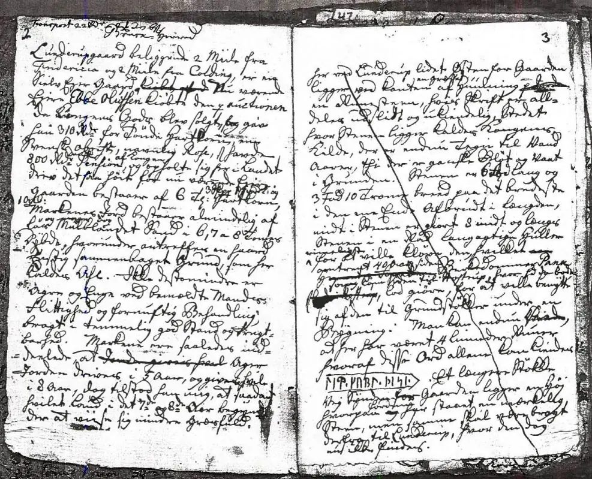
Seine Tagebücher befinden sich heute im Antiqvarisk-Topografisk Arkiv in Kopenhagen. Die Ordner mit den Kopien habe ich dort bei meinem Besuch am 28.09.2022 fotografiert. Die Seiten wurde mir auf Anfrage von einem hilfsbereiten Mitarbeiter - Tausend Dank Dánial - eingescannt und per E-Mail am 10.01.2025 übermittelt, weil ich den Eintrag vor Ort damals irgendwie übersehen hatte.
Hans de Hofman (*10.07.1713 - 03.02.1793, dänischer Politiker und historischer Sammler)
 Bildquelle:
Wikipedia - Lizenz:
Public Domain
Bildquelle:
Wikipedia - Lizenz:
Public Domain
schreibt in »Økonomisk Beskrivelse af Koldinghus Amt fra 1786« : "...In der Gemeinde ist, wie erwähnt, Landerupgaard, wo es noch einen Stein mit Inschrift gibt. Wohlbemerkt. Ein Stück dieses Runesteins wurde vor einigen Jahren gefunden und stehen neben dem Hof »Buhlsminde« in Sønder Vilstrup...".
Hofman war seit 1759 Oberbürgermeister von Fredericia und wurde im Jahre 1773 der letzte Bezirksgouverneur von Koldinghus. Er war auch Schwager von Erik Pontoppidan. Nach dessen Tod im Jahre 1764 hat er den Teil 4-6 des "Den danske Atlas" zu Ende geführt (1768-74). Erwähnt sei noch, dass Hofman zwischen 1755 und 1780 die 11-bändige Reihe "Samlinger af Publique og Private Stiftelser, Fundationer og Gavebreve, som Forefindes udi Danmark og Norge" veröffentlichte. Deren Inhalt - jeweils zwischen ca. 450 und 800 Seiten! - basiert auf einer Vielzahl von Berichten von Pfarrern (Præsteindberetninger) aus dem Jahr 1754. Nach meinen Recherchen sind nun (Stand 13.01.2025) alle 11 Bände über die Königliche Bibliothek in Kopenhagen digitalisiert online verfügbar. Zuvor hatte ich auf diese GoogleBooks Digitalisate verwiesen: Band I / Band III / Band IIII / Band V / Band VI / Band VIII / Band IX / Band X (mit Register zu den Bistümern Aarhus, Viborg, Aalborg und Ribe).
Band I - 1755 / Band II - 1756 / Band III - 1758 / Band IIII - 1759 / Band V - 1760 / Band VI - 1760 / Band VII - 1761 / Band VIII - 1762 / Band IX - 1763 / Band X - 1765 / Band XI - 1780
Im Jahr 1787 bringt Peter Frederik Suhm (*18.10.1728 - 07.09.1798, der bedeutendste dänisch-norwegische Historiker des 18. Jahrhunderts)
Bildquelle:
Wikipedia - Lizenz:
Public Domain
in seinem Werk "Historie af Danmark fra 942 til 1035, Band III.", auf der S. 214 einen kurzen Absatz zu diesem Runenstein. Er geht darin auf die Sage zum Königshof bei einer Quelle beim Landerupgaard ein, die bei den Königen wegen ihrer gesundheitlichen Wirkung beliebt gewesen sei. Er verweist auf den Eintrag bei Erik Pontoppidan in seinem Werk Den danske Atlas (Band V. - S. 957 - k), auf den Eintrag bei Ole Worm in dessen Danicorum Monumentorum libre sex - 1643 und auf die Namen Thyra, Harald und Gorm, worüber wohl von Harald Blauzahn die Rede sei.
Durch Niels Matthias Petersen (meist N. M. Petersen abgekürzt, *Nacht vom 24./25. Oktober 1791 - 11. Mai 1862, dänischer Literaturwissenschaftler zur Skandinavistik und Historiker - link-LIVES - Lebensbeschreibung auf dänisch) wurde 1836 in seinem 2. Band zu seinem Werk "Danmarks Historie i Hedenold" auf der S. 155 diese Anmerkung aufgenommen (2. Auflage 1854 auf der S. 133).
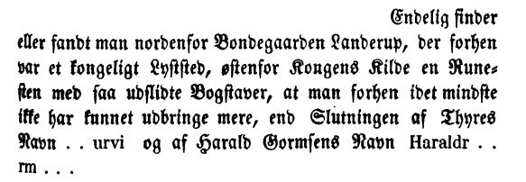
Bei meinem Studien-Tripp nach Kopenhagen im September 2022 habe ich in der Königlichen Bibliothek (Den sorte Diamant) die Hinterlassenschaften der beiden Runenkundler Prof. P. G. Thorsen (*07.08.1811 - 06.05.1883, Bibliothekar, Runenforscher und Historiker - link-LIVES - Artikel: Levnedsbeskrivelser af de ved Københavns Universitets Firehundredaarsfest promoverede Doktorer, Illustreret Tidende 1882, Nr. 1235 - vom 27.05.1833 / Grabstein in Varde / Eheschließung in Varde am 19. August 1848)
 Bildquelle: Fotografie
zw. 1863-1900 von
Fotograf Budtz Müller (*26.12.1837 -
30.12.1884) -
Det Kgl. Biblioteks billedsamling - Lizenz:
Public Domain
Bildquelle: Fotografie
zw. 1863-1900 von
Fotograf Budtz Müller (*26.12.1837 -
30.12.1884) -
Det Kgl. Biblioteks billedsamling - Lizenz:
Public Domain
und Prof. Ludv. F. A. Wimmer (*07.02.1839 - 29.04.1920, Philologe und Runenforscher - link-LIVES - Politiets registerblade - Bestattungsprotokoll)
Bildquelle:
Fotografie zw. 1877-1900 von Fotograf Hansen & Weller
-
Det Kgl. Biblioteks billedsamling - Lizenz:
Public Domain
gesichtet.
Dabei fand ich in Prof. P. G. Thorsens Nachlass (Bezeichnet als: P. G. Thorsens optegnelser, tegninger m.m. vedrørende runer og runemindesmærker - überführt aus der Kopenhagener Universitätsbibliothek 1929 - Gemäß Ministerialschreiben vom 04.03.1929; früher benannt als Additamenta 612 kvart) - Bezeichnung: NKS 3296 kvart (in mehreren einzelnen Pappschachteln) - in der Pappschachtel Nr. 6 zwei mir bis dahin unbekannte handschriftliche Dokumente, die sich mit diesem Runenstein beschäftigen. Eine Notiz von 1838 beinhaltet Aufzeichnungen von Thorsen zu der bis dahin bekannten Runenstein Historie.
Eine umfangreiche Abhandlung stammt von Prof. Jens Jacob Asmussen Worsaae (*14.03.1821 - 15.08.1885, dänischer Archäologe und Vorgeschichtler - link-LIVES - Bestattungsprotokoll)
 Bildquelle: Fotografie
zw. 1863-1900 von Fotograf Budtz Müller
(*26.12.1837 -
30.12.1884) -
Det Kgl. Biblioteks billedsamling - Lizenz:
Public Domain
Bildquelle: Fotografie
zw. 1863-1900 von Fotograf Budtz Müller
(*26.12.1837 -
30.12.1884) -
Det Kgl. Biblioteks billedsamling - Lizenz:
Public Domain
und ist in Teilen offenbar eine Abschrift der Aufzeichnung vom 09.12.1799 von Aosmann Isfron - siehe unten - auf die Worsaae bei einer Reise durch Jütland auf dem Landerup Hof stieß, wie er selbst eingangs schreibt.
Außerdem wird dort diese kurze Notiz verwahrt, die sich auch auf das o.a. Manuskript von Aosmann Isfron bezieht.
In einer weiteren Pappschachtel mit der Nummer 17 fand ich außerdem noch diese Seite mit einer Zeichnung des Runensteins, die auf der von Zeichnung von Laurids Bording für das Runenwerk von Ole Worm basiert - siehe oben - und die offenbar aus einem Buch herausgetrennt wurde.
Heute - 23.03.2024 - habe ich herausgefunden, dass diese Seite aus dem Werk "Runamo og Runerne" von Finnur Magnusson (dänisch auch Finn Magnussen; * 27. August 1781 in Skálholt/Island; 24. Dezember 1847 in Kopenhagen, isländischer Philologe und Archivar - link-LIVES)
 Bildquelle:
Wikimedia - Lizenz:
Public Domain
Bildquelle:
Wikimedia - Lizenz:
Public Domain
aus dem Jahr 1841 stammt - hier der Vergleich:
Etwa um das Jahr 1800 verschwand der Stein, bis ein Bruchstück von ihm durch Frederik Johannes Henrik Orluf (*04.02.1869 -11.09.1954, Lektor cand. mag., Lehrer und Hobbyforscher)
 Bildquelle:
Vejle Wiki - Lizenz:
Public Domain
Bildquelle:
Vejle Wiki - Lizenz:
Public Domain
am 23. August 1910 bei einer gezielten Suche in einem Steinhaufen auf einem Bauernhof in Sønder Vilstrup gefunden wurde (siehe auch unten bei Lis Jacobsen). Inzwischen war der Stein aber wirklich zerkleinert worden und das gefundene Stück - Höhe 188 cm x größte Breite 40 cm x Dicke zw. 22 und 33 cm - wies nur noch Teile der rechten von ehemals vier senkrechten Runenreihen auf. Unterhalb der erhaltenen Runen ist der Stein wie abgeschabt. Aufgrund des Erhaltungszustandes kam Frederik Orluf zu der Einschätzung, dass der Stein längere Zeit in einer Esse bei einem Schmied Verwendung gefunden hatte. Von ihm gingen zwei mehrseitige Schreiben - 25.08.1910 und 17.12.1910 - hinsichtlich der Wiederauffindung dieses Bruchstückes an das Nationalmuseum in Kopenhagen. Auf Anfrage bekam ich diese zwei Briefe als Scan von einem hilfsbereiten Mitarbeiter des Antiqvarisk-Topografisk Arkiv in Kopenhagen- Tausend Dank Dánial - eingescannt und am 10.01.2025 per E-Mail übermittelt. Ich dachte da ein zwei kurze Mitteilungen, aber wie man sieht hat Orluf insgesamt 14 Blätter zu seiner Entdeckung / Deutung vollgeschrieben!
Schreiben - 25.08.1910
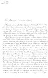 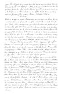 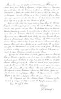
Schreiben - 17.12.1910
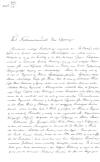 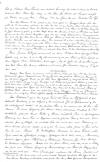 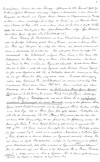 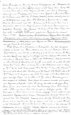 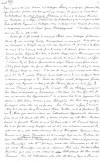 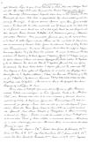 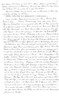 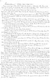 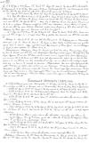 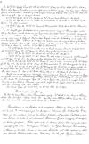 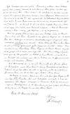
Danach wurde das Bruchstück im Kirchhof aufgestellt. Im Jahr 1966 wurde es in den Park des Landerupgård überführt und 1985 an seinem jetzigen Platz, in der Nähe der erwähnten Quelle an seinem vermuteten ursprünglichen Platz aufgestellt.
In der Tageszeitung "Kolding Folkeblad", Ausgabe vom Sonntag, 11. September 1910, findet sich auf der Titelseite ein umfangreicher Bericht zum Fund des Bruchstücks von Peder Marius Elias Eliassen (*24.07.1874 - 08.05.1928, Journalist und Historiker - link-LIVES - Melderegister Kopenhagen)
Bildquelle: arkiv.dk - Lizenz: Public Domain
mit der Überschrift "Runestenen fra Landerupgaard - Et dansk Oltidsmindes skæbne" - übersetzt: Der Runenstein von Landerupgaard Das Schicksal eines dänischen antiken Denkmals.
Der Autor schreibt dort über "...I. S. From, vermutlich der Eigner des Bauernhofes, der am 09.12.1799 eine seiner Fantasie entsprungene Zeichnung angefertigt hätte...". Der Autor hatte also auch Probleme den Urheber des Dokumentes vom Landerupgaard - siehe unten - zu identifizieren.
26.03.2022 - Auf eine wichtige, umfangreiche Abhandlung zum Runenstein von Lis Jacobsen (*29.01.1882 - 18.06.1961, dänische Runologin und Archäologin -link-LIVES - Taufe - Melderegister - Hochzeit)
 Bildquelle:
Wikipedia - Lizenz:
Public Domain
Bildquelle:
Wikipedia - Lizenz:
Public Domain
in den "Aarbøger for nordisk oldkyndighed og historie - 1913" - Nyfundne Runeindskrifter i Danmark - S. 125-132 wurde ich erst die Tage aufmerksam.
Sie führt darin aus, dass die Inschrift nicht zu deuten wäre, gäbe es nur die Skizze von Ole Worm, da dort irgendwelche Kratzer im Stein als irreale Runenzeichen wiedergegeben wurden. Da man aber auch auf die weitere Zeichnung von Søren Abildgaard zurückgreifen könne, der als ängstlicher Runenzeichner bekannt sei, d.h. er zeichnete nur was er auch wirklich sicher erkannte, komme man mit der Deutung weiter. Darüber bestehe ihres Erachtens kein Zweifel, dass der dort wiedergebe Inschriftteil " l i t k u b l þ i s i " - "ließ dieses Denkmal" lautet. Sowohl die Runen- als auch die Sprachformen würden ziemlich gut mit den bekannten jütländische Runeninschriften aus dem Ende des 10. und vom Anfang des 11. Jahrhunderts übereinstimmen. Vor "lit" war wohl der Name desjenigen angeführt, der das Denkmal errichten ließ, aber weder Ole Worms noch Søren Abildgaards Zeichnung gäben hierauf einen Hinweis. Danach macht sie Ausführungen mit grammatikalischen Überlegungen, Vergleichen zu ausgewählten Inschriften schwedischer Runnensteine und Interpretationen von Ludv. F. A. Wimmer. Darüber könne die Inschrift des Sønder Vilstrup Steines so gelautet haben:
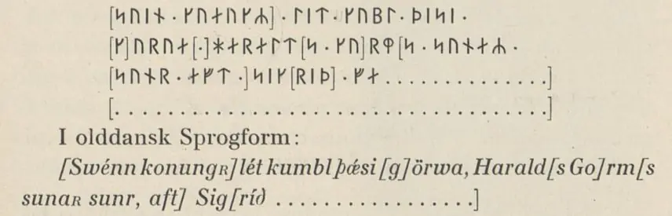
Dieser Deutungsversuch, der in Anlehnung an die Jelling und Sønder Vissing Runensteine erfolge, sei stellenweise aber auch gänzlich geraten. Man könne aber auch erschließen, dass die Zeichnung in Ole Worms Werk Danicorum Monumentorum libre sex - 1643 nicht nur reine Fantasie sei. Mit großer Sicherheit könne man zumindest "... lit kubl þisi | [k]urua haralt[sᵡ ᵡ]rm..." lesen.
Danach geht Lis Jacobsen über die Berichte zur Lage des Runensteins bei der Königs Quelle auf den Bericht vom 24.12.1808 von Kaplan Garnæs in den Indberetninger til Oldsagskommissionen af 1807 ein. Dort erfahre man, dass die Inschrift von einem Isländer im Jahr 1799 abgezeichnet und gedeutet worden sei. Dessen Lesung sei aber reine Fantastie und laute: "König Harald Blauzahn ließ diesen Stein in Erinnerung an seine Mutter Thyra Danebod errichten." Seine Größenangaben waren: "Höhe 3 ¼ Alen, Breite gut 1 ¼ Alen und Dicke ½ Alen" - Anmerkung: 1 Alen = 62,77 cm.
Dann geht sie in ihrem Artikel dazu über, dass es erst Anfang des 20. Jahrhunderts zu wirklich guten Nachrichten über den Runenstein gekommen sei. Im August 1910 fand nämlich Herr cand. mag. Frederik Orluf (*04.02.1869 -11.09.1954), Studienrat aus Vejle, bei seiner gezielten Suche tatsächlich dieses Stück Runenstein wieder. Er war etwas außerhalb der Stadt, nördlich an der Straße nach Herslev unterwegs gewesen, als er dort einen Haufen größere Steine fand. Darunter war auch ein fast 3 Alen langer Stein (1 Alen = 62,77 cm). Er vermutete ein abgespaltenes Stück eines Runensteins gefunden zu haben. Orluf ließ den Stein wenden und waschen und es stellte sich wirklich heraus, dass der Stein Runen trug. Er glaubte jedoch nicht sofort, dass es ein Fragment des Landerup-Steins war, das er gefunden hatte. Bei näherer Betrachtung gelang ihm jedoch die sichere Indentifizierung. Durch seine Fürsorge sei er draußen aufgestellt worden ("Buhlsminde" - siehe oben Eintrag bei Hans de Hofman). Hier hat Lis Jacobsen den Stein am 24. April 1910 untersucht. Sie erklärt dann, dass der Sønder Vilstrup-Stein, der aus gräulichem Granit besteht, 188 cm hoch, unten 39 cm und oben 23 cm breit und zwischen 22 und 33 cm dick ist. Lis Jacobsen führt nun aus, dass Frederik Orluf sich große Verdienste um das Landerup-Fragment erworben hat, aber seine Lesung der Inschrift und sein Interpretationsversuch, den er in seinem Bericht an das Nationalmuseum unternommen hat, jedoch nicht haltbar sei. In seinem Bericht hatte Frederik Orluf auch auf die Übereinstimmung der Größenangabe seiner Messung und der bei der Angabe von Kaplan Garnæs hingewiesen. Im Ergebnis könne man getrost behaupten, dass es sich bei dem Fundstück tatsächlich um ein Teil des vermissten Runensteins handelt, es sei denn es hätte zwei ähnlich große Steine mit der identischen Teilinschrift gegeben, was jedoch für dänische Runensteine sehr unwahrscheinlich sei.
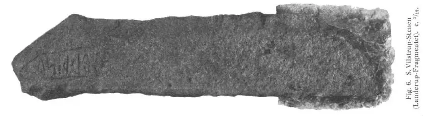
In ihrem Aufsatz zeigt Lis Jacobsen auf der S. 129 noch dieses frühe Foto ( Eigentlich stehend abgebildet, von mir umgelegt, weil es so auf der Webseite besser zu handhaben war).
Der Runologe Ludv. F. A. Wimmer (*07.02.1839 - 29.04.1920, Philologe und Runenforscher) gibt in seinem Werk "De danske Runemindesmærker, Haandudgave ved Lis Jacobsen, 1914, S. 201, Nr. 253" die Inschrift dann so wieder: ... Harald [Go]rms [Sohn] ließ dieses Denkmal errichten für ..."
Marius Kristensen (*27.04.1869 - 02.11.1941, Dr. phil. Hochschullehrer, Dänischer Sprachforscher - link-LIVES - Begravelsesprotokoller)
 Bildquelle:
Denstoredanske.lex - Lizenz:
Public Domain
Bildquelle:
Denstoredanske.lex - Lizenz:
Public Domain
bringt in der "Nordisk tidsskrift for filologie, Fjerde række, 3, 1914" eine ausführliche Rezension zu der von Lis Jacobsen (*29.01.1882 - 18.06.1961, dänische Runologin und Archäologin) als enorme Fleißarbeit herausgegebene Handbuchausgabe von Ludv. F. A. Wimmers Runenwerk "De danske runemindesmærker". Auf der S. 76 bringt Kristensen dann an, dass er deren Auffassung zur Deutung dieser Inschrift in deren Artikel in Aarbøger for nordisk oldkyndighed og historie - 1913 (S. 127 - siehe Screenshot oben) nicht teilt, da seiner Meinung nach das einzige sichere Wort "fapur" sei. Allerdings wäre sie in der 1914 erschienenen Handbuchausgabe "De danske runemindesmærker" (Nr. 253, S. 201) offenbar schon selbst wieder davon abgekommen.
Durch den dänischen Runologen Erik Moltke (*04.04.1901 - 19.10.1984, Runologe, Historiker)
 Bildquelle: Scan von Buchumschlag "Runerne i Danmark og ders
oprindelse" - Erik Moltke - 1976 -
Lizenz:
CC-BY-SA
Bildquelle: Scan von Buchumschlag "Runerne i Danmark og ders
oprindelse" - Erik Moltke - 1976 -
Lizenz:
CC-BY-SA
wurde dieses Fotogafie am 17.09.1929 aufgenommen.
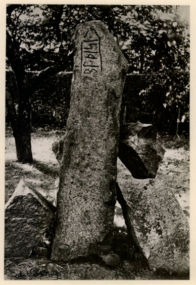
Der digitalen Sammlung des Nationalmuseums Kopenhagen entnommen - Lizenz: CC-BY-SA
Erik Moltke - Jon Skonvig og de andre runetegnere. Et bidrag til runologiens historie i Danmark og Norge I-II, 1956-58 Band 2 hat auf der S. 183 die Deutung der Inschrift gegenüber seiner früheren Ausführung in Lis Jacobsen/Erik Moltke - Danmarks Runeindskrifter - 1942 - Sp. 59ff. erweitert. Nun gibt er an: "NN. lit ı kubl ı þisi ı [ka]urua ı haralt(s) ... rm ... faþ(ur) ...". Ein sehr interessanter Runenstein, der vielleicht "Gorm" und "Harald" erwähnt hat, sei leider verloren gegangen ergänzt er noch.
Dessen Argumentation schließt sich auch heute noch die "Dänische Runendatenbank" über den entsprechenden Eintrag zum Runenstein von Sønder Vilstrup an.
Im Vorfeld zu dem 2016 erschienenen Buch von Lisbeth M. Imer (*1973, Runologin am Nationalmuseum Kopenhagen) "Danmarks Runesten - en fortælling" reiste sie mit dem Fotografen Roberto Fortuna zur Bestandsaufnahme durch die Lande. Dieser hat die Runensteine abends bei Dunkelheit mit Schräglicht aufgenommen und darüber wirklich herausragende Fotos erzielt. Diese Aufnahme entstand am 09.11.2011.
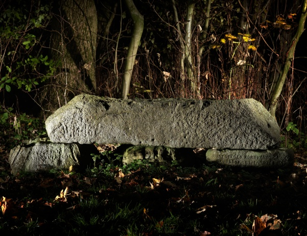
Der digitalen Sammlung des Nationalmuseums Kopenhagen entnommen - Lizenz: CC-BY-SA
Wegbeschreibung: Wenn man von der E45, Fahrtrichtung Norden, die Abfahrt Nr. 62 wählt, fährt man im nun folgenden Kreisverkehr in Richtung Almind auf die Straße Nr. 170. In Almind zweigt eine Straße nach rechts in Richtung Møsvrå ab. An einer Kreuzung im freien Feld geht es dann nach rechts in den Landerupvej in Richtung Sønder Vilstrup. Diese Straße läuft noch vor der Autobahnüberquerung direkt am Landerupgård (Kinder-/Schulheim) vorbei. Unmittelbar nach dem Heim-Areal geht an einer Kreuzung nach links ein schmaler geteerter Weg in ein Waldstück (Koordinaten: 55.567510 9.554427). Diesem Weg folgt man bis zu seinem Ende (Ca. 270 m). Ab hier geht es nur noch zu Fuß (knapp 200 m) nach links durch eine kleine Allee. Die Heimgebäude liegen nun linker Hand. Der Weg trifft auf einen kleinen See, vor dem man nach rechts auf eine Wiese kommt. An deren Ende liegt das Runensteinbruchstück auf drei Steinen (Koordinaten: 55.569637 9.559225). Auf dem linken unteren Stein steht in dänischer Sprache (übersetzt): "Bruchstück des Landerupsteins", auf dem rechts unterlegten Stein steht (übersetzt): "Der Runenstein verschwand um 1800. Das Bruchstück wurde um 1910 gefunden und wurde zurückgebracht im Friedensjahr 1945" - siehe auch Text unten zur Bilderstrecke von 2022.
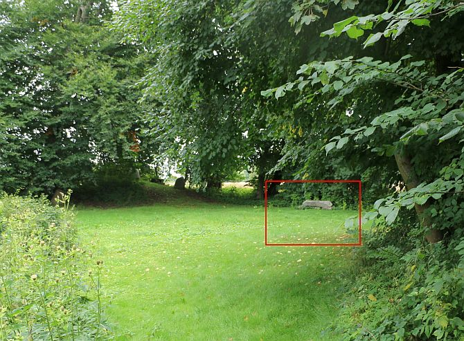
Das Foto oben und die Detailfotos vom Runenstein - linker Frame - wurden von mir am 23. August 2016 bei meinem damaligen Besuch vor Ort gefertigt.
22.03.2021
Heute habe ich mir die Webseite zu Sønder Vilstrup vorgenommen und mal auf Vordermann gebracht. Dabei stieß ich im Internet auf diese Seite: https://arkiv.dk/vis/2439728.

Maße des Fotoabzugs: 11,5 x 15,2 cm.
Das dort wiedergegebene Dokument, offenbar vom 09. Dezember 1799 - so die handschriftliche Datierung - und wohl im Stadtarchiv von Kolding befindlich, bzw. zumindest die Fotografie davon, habe ich noch nie gesehen. In der mir zugänglichen, umfangreichen Literatur ist zu der Jahreszahl eigentlich auch nix verzeichnet. Von daher habe ich sicherheitshalber mal Lisbeth M. Imer (*1973, Runologin am Nationalmuseum Kopenhagen) vom Nationalmuseum in Kopenhagen am 22.03.2021 eine E-Mail geschrieben. Die kann sich das ja mal genauer anschauen, zumal darauf scheinbar die vormals komplette Inschrift aufgezeichnet und textlich aufgeführt wurde. Das wär' ja ein Ding, quasi eine Art "Metalldetektorfund" bei meinen Streifzügen durchs Internet.
In ihrer zügigen Rückmeldung vom 25.03.2021 führt sie aus, dass sie das Dokument bislang auch noch nicht gesehen hat. Es sei aber in neuerem Dänisch verfasst. Die Inschrift laute:
haraltr : kukR : blotan :
bRfalRþR tRnnæ stRn :
uþhukRn : ok : rRist ouRr
Rnþa : til Rrinþrink :
om sin muþr : þiurui
þannRoþ
Der Autor wäre eine Person, die weiß, dass die yr-Rune (hier mit R wiedergegeben) für den Vokal "e" verwendet werden kann, genau wie im Stein von Sønder Vissing. Übersetzt bedeute diese Inschrift in etwa: "König Harald Blauzahn ließ diesen Stein in Erinnerung an seine Mutter Thyra Danebod errichten." Leider hätte sie aber gerade auch sehr wenig Zeit wegen der neuen Wikinger Ausstellungskonzeption im Nationalmuseum.
Um mehr zu erfahren, habe ich eine weitere Anfrage - 27.11.2021 - an die Fundstelle, das Stadtarchiv von Kolding gerichtet. Von dort wurde mir von der Archivarin Henriette Bornemann Baudtler am 10.12.1021 mitgeteilt, dass man über die Echtheit des Dokuments leider nicht viel sagen könne. Es sei ein Foto, das der Uhrmacher und Amateurfotograf Ludvig Thomsen vor 1935 aufgenommen hat (Der Mann starb in diesem Jahr). Das Originaldokument liegt dort nicht vor. Es stammt ausweislich dem Eintrag von einem "J.S. Frone", über den es aber nirgends Aufzeichnungen gäbe. In Ludvig Thomsens eigenem Register fügt er dem Bild keine weiteren Details hinzu, und die Archivarin fügt in ihrer Antwort noch an: "Obwohl ich die lokale Geschichte in Kolding recht gut kenne, sagt mir der Name "J.S. Frone" nichts. Ich glaube also nicht, dass wir uns näher kommen."
Schade! Ich hab' immer noch das Gefühl, dass hier etwas dran sein könnte!
23.03.2022
Heute schon ein Jahr rum, aber die Sache lies mir einfach keine Ruhe habe ich mich an Michael Lerche Nielsen - Associate Professor - Universität Kopenhagen - Department of Nordic Studies and Linguistics - gewandt.
Er hat sich der Sache dankenswerter Weise direkt angenommen und das Rätsel umgehend lösen können! :-)
Er hat J.S. Frone als einen Isländer namens Aosmann Isfron identifiziert. Dazu finden sich Aufzeichnungen in Danske Præsters Indberetninger til Oldsagskommissionen af 1807, Vest- og Sydjylland, S. 33-35. Dort findet sich ein Bericht von Kaplan Jens Johan Garnæs (*28.08.1772 - 14.02.1817, Kaplan aus Kolding und auch Pfarrer in Alminde - link-LIVES)
 Bildquelle:
Jens Johan
Garnæs : 1772 - 1817 -
Arne Garnæs Petersen - 1967
Bildquelle:
Jens Johan
Garnæs : 1772 - 1817 -
Arne Garnæs Petersen - 1967
in dem er folgendes als Mitteilung - unter Bezug auf das o.a. Dokument von Aosmann Isfron - zur vorausgegangenen Aufforderung der Altertümerkommission schreibt:
Kolding den 24de December
1808.
Efter den Kongelige Kommissions trykte Opfordring af 27de
April d. A,
giver jeg mig herved den Ære at indsende følgende, vist nok ringe
Udbytte
af mine Efterspørgsler og Undersøgelser i min Virkekreds.
Her i
Bruskherred østen for Landerupgaard, hvis Marker støde til Møsvraa-
By i mit
Sogn Alminde, 300de Skridt fra bemeldte Gaard, laae for faa
Aar
siden en Runesteen tæt ved en Kilde, Sagnet nævner Kongebadet, om
hvis
helbredende Virkninger Traditionen fortæller synderlige Ting.
Ventelig er
det den samme Steen, Worm omtaler i Monum. Dan. pag. 446
og hvis
Indskrivt han allerede den Gang udgiver for næsten ulæselig,
og, enkelte Ord
undtagen, udslettet.
En i Aaret 1799 rejsende Islæender, Isfron, hvis
skrivtlige Optegnelse bevares
paa Landerupgaard i Glas og Ramme hos Ejeren
Berthel Ebbesen,
angiver Stenen at have varet 3¼ Al. lang, 5½
Qvarter bred og 2½ Qvarter
tyk. Den var skrubbet og ujævn overalt, og kostede
- efter hans egne Ord -
megen Umage at rense.
Runeskrivten meddeles paa
følgende Side, som en Afskrivt, næjagtigen
tagen af Islænderens Afskrivt.

Neden under Jslænderens Kopi staaer med Fraktur:
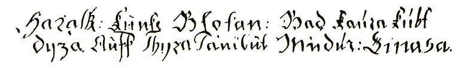
En
Fjerding Vej vesten for Stenen og Badet, fortæller Islænderen - Kilderne
angives ikke - har i fordum Tid staaet et Slot paa en høj Bakke, som efter
gamle Annalers Beretning menes at Harald Konge brugte til Sommersæde
med samt
sin Moder Thyra i hendes Enkestand; de have formodentlig
benyttet sig af
Badet, og rimeligvis er Stenen af Harald sin Moder helliget.
Bemeldte Slot
skal senere være nedbrudt efter Dronning Margrethes Befaling,
og dets
Materialier være brugte til Taarnets Opbyggelse af det nu afbrændte
Koldingslot, der først har havt Navnet: Middelboslot, og siden er
kaldet
Ørnsborg.
Er Islænderens Beretning grundet, maa Benævnelsen Middelboslot
sandsynligen have sin Oprindelse af Kolding-Slots Beliggenhed imellem
ovennævnte Kongeborg, og det gamle Slot Haderslevhus, som af Hertug
Hans
omtrent 1549 blev nedbrudt.
Runestenen var ved min Hidkomst til Egnen
./.1804./. allerede sønderhugget
af Jordejeren Peder Madsen at
Vilstrup for at bruges til Gjærde.
Saaledes har Uvidenhedens og Egennyttens
ødeleggende Vandalismus
udslettet mangt et Mindesmærke fra Oldtiden, der 1
sig selv bar
Uforgjengelighedens Stempel.
En Indskrivt findes ogsaa paa
Klokken i Alminde Kirketaarn, men Bogstaverne
ere løbne i hverandre, og
Klokken hænger paa et Sted, hvor det er
saa vanskeligt at faa hele Omskrivten
efterseet. Af enkelte Bogstaver
har jeg imidlertid Grund til at slutte, at den
ej er meget ældre end Reformationen.
Lykkes det mig at faae den dechiffreret,
skal jeg tage mig den underdanige
Frihed at indsende den.
I:I: Garnees
residerende Kapellan i Kolding
og Sogneprast for Alminde.
Übersetzt:
Kolding am 24. Dezember 1808.
Nach dem ergangenen Aufruf der
Altertümerkommission vom 27. April des Jahres gebe ich mir hiermit die Ehre, die
folgenden, vermutlich dürftigen Ergebnisse meiner Nachforschungen und
Untersuchungen in meinem Einflussbereich vorzulegen.
Hier in der Brusk
Harde, östlich
vom Landerupgaard, dessen Land an den Ort Møsvraa in meiner Gemeinde Alminde
angrenzt, 300 Schritte vom betreffenden Bauernhof entfernt, lag vor einigen
Jahren ein Runenstein in der Nähe einer Quelle. Die Legende erwähnt das
königliche Bad und über deren heilende Wirkung erzählt die Tradition seltsame
Dinge. Vermutlich ist es derselbe Stein, den Ole Worm in seiner
Danicorum monumentorum
auf der Seite 446 erwähnt und wie er es beschrieben hat, war er damals bereits
fast unleserlich und die Inschrift, mit Ausnahme einiger weniger Worte,
ausgelöscht. Ein Isländer namens Isfron, der im Jahr 1799 hierher reiste und
dessen schriftliche Aufzeichnung im Landerupgaard gerahmt hinter Glas beim
Besitzer Berthel Ebbesen aufbewahrt wird, gibt an, dass der Stein 3¼ Ellen lang,
5½ Viertel breit und 2½ Viertel dick war. Es war überall abgeschliffen und
uneben und mit seinen eigenen Worten erforderte es viel Mühe, ihn zu
reinigen. Die Runen werden auf der folgenden Seite als Kopie, im Negativ,
wiedergegeben. Vom Isländern übernommen/abgeschrieben.
Unter der Zeichnung des Isländers steht in Frakturschrift:
(König Harald Blauzahn ließ diesen Stein in Erinnerung an seine Mutter Thyra Danebod errichten)
Ein Viertel westlich des Steins und des Bades,
sagt der Isländer die Quellen werden nicht angegeben stand in der Antike auf
einem hohen Hügel eine Burg, die laut Berichten alter Annalen vermutlich genutzt
wurde von König Harald als Sommerresidenz für seine verwitwete Mutter Thyra; Sie
benutzten wahrscheinlich das Bad, und vermutlich wurde der Stein von Harald,
seiner Mutter, geweiht. Das denkmalgeschützte Schloss musste später auf Befehl
von Königin Margrethe abgerissen und seine Materialien für den Bau des Turms des
inzwischen (30.03.1808)
niedergebrannten
Schloss Koldinghus verwendet werden, das zunächst
den Namen Middelboslot trug und danach Ørnsborg hieß.
Wenn der Bericht des
Isländers stimmt, muss der Name Middelboslot lauten und sein Ursprung
wahrscheinlich in der Lage von Schloss Koldinghus zwischen dem oben erwähnten
Königsschloss und dem alten Schloss Haderslevhus, das um 1549 von Herzog Hans
abgerissen wurde, haben. Der Runenstein war bei meiner Ankunft in der Gegend
./.1804./. zuvor bereits vom Gutsbesitzer Peder Madsen in Vilstrup zerhackt
worden, um als
Zaun genutzt zu werden. So hat der zerstörerische Vandalismus der Unwissenheit
und des Eigennutzes so manches Denkmal der Antike ausgelöscht, das selbst den
Stempel der Unzerstörbarkeit trug. Auf der Glocke im Kirchturm von Alminde
findet sich auch eine Inschrift, aber die Buchstaben sind ineinander
übergegangen und die Glocke hängt an einer Stelle, an der es so schwierig ist,
die gesamte Inschrift zu erkennen. Aus einzelnen Briefen kann ich jedoch
schließen, dass sie nicht viel älter als die Reformation ist. Wenn es mir
gelingt, es zu entziffern, werde ich mir die bescheidene Freiheit nehmen, es
einzureichen.
I:I: Garnæs, amtierender Kaplan in Kolding und Gemeindepfarrer in Alminde
Darin führt er also aus: "Der Runenstein war, als ich 1804 in die Gegend kam, bereits von dem Gutsbesitzer Peder Madsen aus Vilstrup zerkleinert worden, um als Zaun verwendet zu werden!"
Da ist vermutlich von Peder Madsen (*1752 - 28.05.1823, Besitzer des Gøttrupgaard) die Rede - siehe Slægten Winter fra Tislund i Sønderjyyland - S. 48/49 und 113. Bei dem erwähnten Hofbesitzer Bertel Ebbesen handelt es sich laut Internetrecherchen - z.B. Volkszählung von 1801 - um Bærthel Ebbesen (*04.06.1766 - 27. August 1820 - link-LIVES) - Quelle: Beskrivelse af Sønder Vilstrup Sogn - S. 85-86.
Literaturhinweis zu Kaplan Jens Johan Garnæs (*28.08.1772 - 14.02.1817 - link-LIVES) : Abhandlung mit dem Titel "Jens Johan Garnæs : 1772 - 1817" von Arne Garnæs Petersen - 1967 / Bildnis seines Grabsteins über arkiv.dk / Abhandlung "Koldings Kirkegårde" von Hans Thomsen Hansen - in Koldingbogen 2006 - S. 132-134 - Bildnis Grabstein S. 133
Michael Lerche Nielsen kommt bei seinen Recherchen weiter zu diesem Ergebnis:
"Es besteht kein Zweifel, dass Isfron die Inschrift selbst verfasst hat. Isfrons Runenwerke von 1797 (Jelling) und 1799 (Sønder Vilslev / Landerupgård) haben keinen wissenschaftlichen Wert, sind aber natürlich forschungsgeschichtlich interessant. Isfron war ein isländischer Buchdrucker in der Stadt Vejle und er hat auch eine sehr fantasievolle Schrift über die richtige Interpretation der Jelling-Steine hinterlassen, die man auf der Website des Jelling-Projekts nachlesen kann: http://jelling.natmus.dk/om-jelling/tradition-og-historie/aosmann-isfron-1797/"
Von Michael Lerche Nielsen wurde auch der Eintrag zu diesem Runenstein in der Dänische Runendatenbank unverzüglich aktualisiert / ergänzt.
Im Ergebnis ist dieses Dokument also eine Fotografie der verschollenen Original Aufzeichnungen von Isfron, die durch den Uhrmacher und Amateurfotograf Ludvig Thomsen vor 1935 angefertigt wurde und irgendwann Einzug in das "Kolding Stadsarkiv" fand.

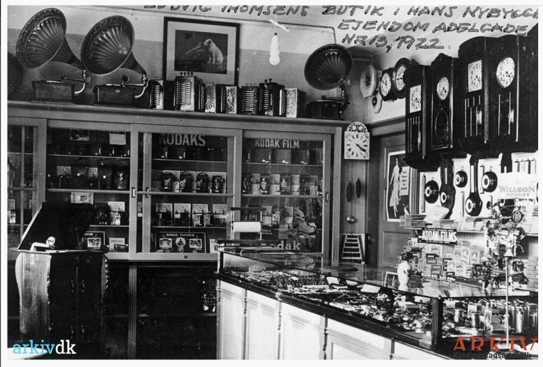
27.03.2022 - Das Foto links aus dem Jahr 1930 zeigt den Uhrmacher und Amateurfotograf Thomas Ludvig Thomsen (*21.03.1867 - 28.02.1935 - link-LIVES) mit seiner Kamera. Er hatte 1922 in Kolding, in der Adelgade 13, dieses neue Geschäft eröffnet. Die Fotografen sind jeweils unbekannt. Beide Fotos werden im Stadtarchiv von Kolding aufbewahrt. Die genauen Bilddaten sind von mir jeweils zu arkiv.dk verlinkt.
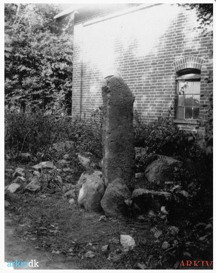
Den wiedergefundenen Runenstein hat er auch fotografiert - Quelle: arkiv.dk - dort wird diese Aufnahme auf ca. 1930 datiert.
Durch den dänischen Dichter Nikolai Frederik Severin Grundtvig (*08.09.1783 - 02.09.1872, Dichter, Schriftsteller, Pfarrer, Historiker, Pädagoge, Politiker - link-LIVES - Bestattunghsprotokoll Kopenhagen)
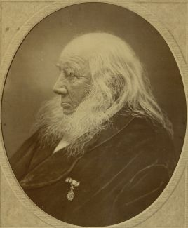
Bildquelle: Wikipedia - Lizenz: Public Domainwurde das Gedicht "Et Blad af Jyllands Rimkrønike" als Teil seiner "Heimdall" im Jahr 1816 verfasst. Dieses Gedicht umfasst 1890 Verse verteilt auf 270 Strophen mit je 7 Versen. Darin kommt auch diese Strophe/Vers vor:
I Landerup ved Kolding-Aa,
Der er saa
klar en Kilde,
Der stod en Steen, saa
stor og graa,
Den Meget sige vilde,
Som, naar engang Man kan forstaae
At
stave ret de Runer raa,
Man faaer kanske
at vide.
Ved Kilden stod en Kongegaard
End ei saa
langt tilbage,
Og Ordet gik, som skrevet
staaer,
At i de gamle Dage
Da havde der Kong Harald Klak
Et kiært
og synderligt Gemak
Og riste lod de
Runer.
Der gik endnu et andet Ord,
At det gik
Konger ilde,
Naar ei, ihvor de drog og
foer,
De drak af samme Kilde;
Og derfor Man, med samme Skiel
Som
Roskilds gamle Kongevæld,
Den nævner
Konge-Kilde.
Og er det sandt, som skrevet staaer,
Det
sandes vel tillige,
At Ebbe kom til
Landdrupgaard,
At christne Haralds Rige;
Og naar det Konger godt skal gaae,
Tilvisse og de drikke maae
Af Korsets
Konge-Kilde.
Darin wird also der Runenstein thematisiert und dem dänischen König Harald "Klak" Halfdansson (ca. 785-846) zugeschrieben.
Einer ergänzenden Note von Grundtvig zufolge, wurde der Stein inzwischen zum Treppenstein gespalten.
Diese Gedichtspassage findet sich auch in dem im Jahr 1945 erschienen Buch "Beskrivelse af Sønder Vilstrup Sogn Brusk Herred i Vejle Amt" von J. J. Ravn (S. 4ff.).
Im Internet finden sich über die Homepage der dänischen Runendatenbank hier alle Infos zu diesem Runenstein.
Der entsprechende Eintrag zu dem Runenstein in "Fund og Fortidsminder" ist hier verlinkt.
Über diesen Link finden sich zu dem Runenstein Informationen des Forschungsprojektes "Runes" der Akademie der Wissenschaften zu Göttingen.
Im Rahmen meiner 2022er Jütland Wikingertour war ich am Samstag, 18.06.2022, vor Ort. Zu meiner Überraschung wurde die Allee, die vom Fahrweg hinunter zum Standort des Runensteins führte, nahezu vollständig abgeholzt - siehe Skraafoto vom 31.05.2021 im Vergleich zum Skraafoto vom 20.05.2023 - Skraafoto ist eine Webanwendung, die von der Dänische Agentur für Datenversorgung und Infrastruktur weltweit kostenlos bereitgestellt wird - frei von Urheberrechten. Die Aufnahmen werden alle zwei Jahre erneuert und neben einer Senkrechtaufnahme wird ein Schrägbild aus jeder Himmelsrichtung angeboten, das man über eine Adresssuche aufrufen kann.
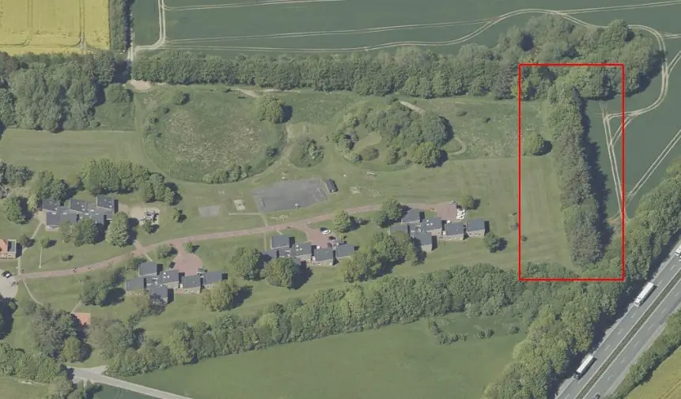
Skraafoto vom 31.05.2021Ich habe per E-Mail nachgefragt und bekam am 03.08.2022 die Antwort, dass der aktuelle Besitzer des Landerupgaard die Bäume im Frühjahr 2022 gefällt hat.
Aufgrund seiner Lage musste ich den Runenstein erst von etlichen Moosflecken befreien und das Grünzeug davor entfernen, bevor ich ihn fotografierte.


#/media/Datei:Fotoreproductie_van_een_schilderij,_voorstellende_een_portret_van_Christian_Friis_til_Kragerup_Christian_Friis_(til_Kragerup)_(titel_op_object),_RP-F-2001-7-742-16.jpg){kind=link}


Diese Fotostrecke gibt nun den aktuellen Weg vom Landerupgård (links gelegen) zum Runenstein wieder. Die beiden äußeren Steine, auf denen der Runenstein ruht, tragen eine Inschrift in dänischer Sprache (Übersetzung siehe auch oben):
links: "BRUDSTYKKET AF LANDERUPSTENEN"
Übersetzung: Fragment des Landerupsteins
rechts: "RUNESTENEN FORSVANDT CA 1800 - BRUDSTYKKET FANDTES 1910 - OG BLEV BRAGT TILBAGE - I FREDSAARET 1945"
Übersetzung: Der Runenstein verschwand um 1800. Das Bruchstück wurde um 1910 gefunden und wurde zurückgebracht im Friedensjahr 1945.
Literaturhinweise:
Vejle-Amts-Aarbøger - udgivne af Vejle-Amts-Historiske-Samfund - Første Halvbind - 1908 - Smaastykker - To Præsteberetninger fra 1687 - von P. Eliassen - darin S. 171-175
Lis Jacobsen - Nyfundne Runeindskrifter - Aarbøger for Nordisk Oldkyndighed og Historie 1913 - S. 106-168 - Sønder Vilstrup ab S. 125ff.
J. J. Ravn - Beskrivelse af Sønder Visltrup Sogn - Brusk Herred i Vejle Amt - S. 11 ff. und S. 63 -
H. P. Berthelsen - Eltang, N. Bjært og S. Vilstrup Sogne - 1955 - Peder Clausen Emmerleff, 16811719 - S. 25-26
Erik Moltke - Runerne i Danmark og deres oprindelse - 1976 - S. 163 (...an einer Stelle in der 3. Linie kann man vielleicht Vater lesen... und weiter...dann hat eine Frau den Stein errichten lassen)
Erik Moltke - Runes and their origin - Denmark and elsewhere - 1985 - S. 203ff.
Danmarks runesten - Runesten i landskabet - en registrant - Miljøministeriet - Skov- og Naturstyrelsen - 1992 - S. 70
Danske Præsters Indberetninger til Oldsagskommissionen af 1807, Vest- og Sydjylland, Bearbeitet von Christian Adamsen und Vivi Jensen, unterstützt von Christian Liebing, Wormianum Højbjerg, 1995, S. 33-35
Gunhild Øeby Nielsen - De danske runestens oprindelige plads - KUML 2005 - S. 121-144 - darin S. 122
Gunhild Øeby Nielsen - Runesten og deres fundforhold - 2007 - Nr. 22 auf der S. 204